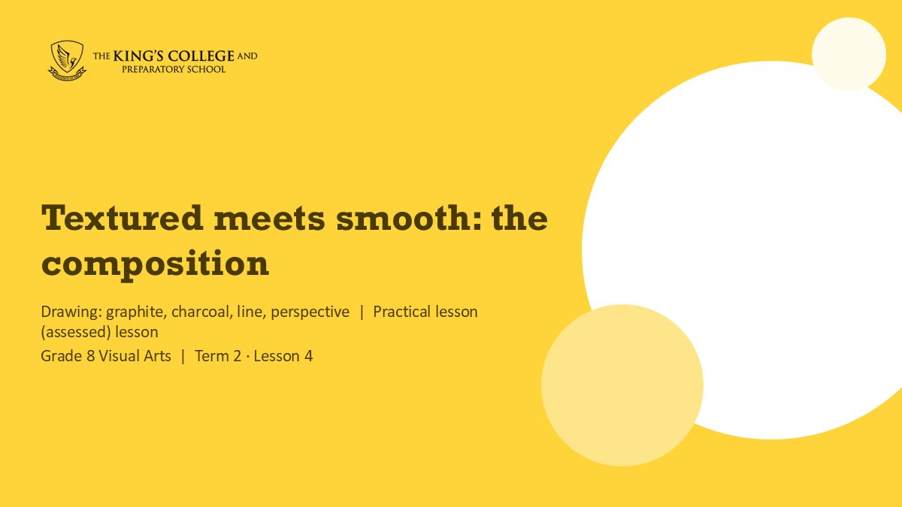

Term 2 · Lesson 4 · Practical lesson (assessed)
Textured meets smooth: the composition
Start here
Today I will
- Today I will plan a composition of a textured and a smooth object
- Today I will plan where the light and the focal point will be
- Today I will start my assessed drawing with light planning lines
A rough pine cone next to a shiny cup. Why might an artist choose two objects that are so different?
Words to Know
| Word | Meaning |
|---|---|
| Composition | How everything is arranged on the page. |
| Focal point | The place the eye goes to first and keeps returning to. |
| Texture | How a surface feels, or looks as if it would feel. |
| Reflective surface | A shiny, smooth surface that shows sharp highlights and reflections of its surroundings. |
| Thumbnail sketch | A small, quick sketch used to try out a composition. |
Slides

Videos
Notes
Combining a textured and a smooth object in one composition; planning light and the focal point.
Planning the composition
- Arrange: Overlap the objects slightly and set the lamp on one side.
- Two thumbnails: Two quick small sketches in your journal: choose the one with better balance.
- Focal point: Decide which object the eye should go to first, and place it off-centre.
- Fill the page: The objects should fill most of the page, not float in the middle.
- General to detail: Big shapes first, then the main areas of tone, then the details.
Texture meets shine
| Textured object | Smooth or shiny object |
|---|---|
| Many repeated marks | Smooth, blended tone |
| Soft changes in value | Sudden jumps from dark to white |
| Many small highlights | Few, sharp highlights |
| Shadows in every groove | Bent reflections of the room |
Rough next to shiny: contrast makes both surfaces stronger.
Practical
You need: Visual journal (thumbnails), paper for the assessed drawing, HB, 2B, 4B and 6B pencils, eraser, blending stump, objects, lamp
Start the textured-and-smooth drawing
- Draw two thumbnails of the set-up in your journal and choose the better one.
- Draw an arrow on your page to show where the light comes from.
- Draw light planning lines and measure the proportions with your pencil.
- Refine the outlines of both objects.
- Lightly map the shapes of light and dark on the shiny object.
- Start a first light layer of tone on both objects, saving the highlights.
- Write your name lightly on the back and store the drawing flat in your portfolio file.
Term 2 Assessment due (Friday). Assessed (Term 2 practical, 40 marks): the textured-and-smooth drawing in graphite (finish in the extra lesson); it also prepares the mid-year practical exam.
Test yourself
- Why do we put a textured and a shiny object together?
- Why do we work from general to detail?
- Where did you place your focal point, and why?
Show answers
1. The contrast makes each surface look stronger. 2. So the big shapes and proportions are right before we spend time on details. 3. Own answer, e.g. the shiny object slightly off-centre, because its sharp highlights pull the eye.
Finished early?
Test other layouts before you commit to the full page.
- Draw two small rectangles in the same shape as your drawing page.
- Sketch the two objects in a different arrangement in each (overlapping, one higher, closer to an edge).
- Make sure the objects fill most of each box.
- Tick the one with the best balance and write why.